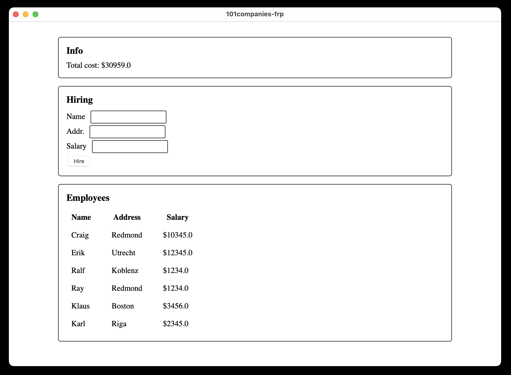

Graphics with Haskell: Reflex
This is the second of two parts on displaying graphics and user interfaces with the functional programming paradigm, in Haskell.
In this part we’ll look at Functional Reactive Programming (or FRP for short), and particularly on how it can be used to build an interactive UI.
Functional Reactive Programming
Functional reactive programming is a general paradigm well suited to programming real-time systems in a high-level and functional way.
Real-time systems or reactive systems are those that handle continuous time-varying values, discrete events in real time, and react accordingly. A good example of these systems is a mobile robot. They must take into consideration continuous inputs like wheel speed, orientation, and discrete events such as detection of another object.
The class of reactive systems we’re interested in here is interactive graphical UIs. A user interface has multiple components that can be seen as discrete events and continuous time-varying values. An input box, where one might write their name, is an example of a time varying value (it continously changes – whenever the user types something); a button is an example of a discrete event in time: at certain points in time the user will click the button. This will make more sense with practice and code samples.
So the promise of functional reactive programming is that we can program these complicated reactive systems in a pure functional way. But how?
Functional Reactive Programming introduces two key concepts: Behaviours and Events.
Behaviours are first-class values that vary over continuous time.
That means a behaviour is a value that changes with time and can be passed to/returned by functions.
Events are first-class values that occur at some points in time.
They may refer, e.g., to happenings in the real world time – such as a mouse click or a key press.
And then, it says that the FRP implementation will handle all time-related details so that the programmer can describe their reactive system without thinking about what happens at any particular point in time, but rather thinking about what happens accross all points in time.
This type of wholemeal programming (working with the whole, not the individual part) is quite common in functional programming. When working with lists, the same pattern appears: we think and define functions in terms of entire lists, rather than about any particular element in the list.
Functional reactive programming just takes it further by abstracting over time itself.
In the end, the programmer doesn’t need to worry about any of the how, just the what (which quite nicely aligns with the original paper on FRP[1], which distinguishes presentation from modelling). So, we manipulate time-dependent behaviours and events, but we never directly see the time.
In fact, both Behaviors and Events are usually abstract data types, meaning we don’t even need to know how they are defined.
Later we’ll see what this actually looks like.
- [1] Functional Reactive Animation, …
Behaviours
A Behaviour is a first-class value that varies over continuous time. In other words, a Behaviour is a value that can be passed to and returned by functions (is first-class) and this value is defined for all time (and can change accross time)
Intuitively, it can be seen as a function from time to value (b :: Time -> Value) and
could be visualized as:

Note how this function is pure (there are no side effects): we simply map all points in time to a value.
A behaviour is an abstract type constructor, meaning we know nothing about its
data constructors. We interact with behaviours through the combinators
and functions defined by the FRP implementation we’re using. The type parameter
of Behavior indicates the type of the values.
data Behavior aBehaviors are usually Functors (it depends on the FRP implementation, in
Reflex they are). We can imagine that if we have a behaviour (x :: Behavior Int) which is for all points in time equal to 1 (you might imagine the 2D graph
of the constant math function f(x) = 1), there is an easy way to define a
behavior y which is constantly equal to 2: fmap (+1) x :: Behavior Int.
Let’s write a short example of a function that transforms a Behavior String
into a Behavior (Maybe Color)
data Color = Yellow | Magenta | Cyan
color :: Behavior String -> Behavior (Maybe Color)
color bstr = fmap toColor bstr
where
toColor "yellow" = Just Yellow
toColor "magenta" = Just Magenta
toColor "cyan" = Just Cyan
toColor _ = NothingAn example of a behaviour we’ll use is the value in an input text box. This box has a string at all times. Before the user writes anything, the value is the empty string. The value at some time after the user has written “123” is “123”.
Events
An Event is a first-class value that occurs at discrete points in time. In other words, an Event is a value that can be passed to and returned by functions (is first-class) and this value is defined at only some points in time. If the event is occuring, and if it is, what its value is.
It’s a bit harder to think about intuitively, but one can imagine an event as a
function from time to maybe a value (e :: Time -> Maybe Value) or as a list of
values and the times at which they occur (e :: [(Time, Value)]).

An event is also an abstract type constructor, meaning we know nothing about its
data constructors. As with behaviors, we interact with events through the combinators
and functions defined by the FRP implementation we’re using. The type parameter
of Event also indicates the type of the values.
data Event aAbove, a is the type of the value the event carries when it occurs.
Events are functors! You can think of them being functors the same way you would about Behaviors.
An example of an event we’ll use is the one generated by a button. Everytime the
button is clicked, an event occurs of type Event () (a button click has no
associated value, unlike, e.g., key presses, which would have type Event Char).
Ahead we’ll see how we can manipulate and put together events and behaviors to build a reactive application.
Reflex
Reflex is a haskell library for functional reactive programming in haskell.
Interactive programs without callbacks or side-effects. Functional Reactive Programming (FRP) uses composable events and time-varying values to describe interactive systems as pure functions. Just like other pure functional code, functional reactive code is easier to get right on the first try, maintain, and reuse.
Reflex is a fully-deterministic, higher-order Functional Reactive Programming interface and an engine that efficiently implements that interface.
Reflex provides the above described abstractions (behaviors and events), functions to work with them, and an additional abstraction called Dynamics. For our intents and purposes, we’ll consider dynamics to be the same as behaviors, since discussing the details of it would be out of the scope of this tutorial[2].
- [2] In a very short note: Reflex is implemented with push-pull evaluation, and thus often requires explicit push notifications to update things like the DOM. Event push notifications when they occur, but Behaviors don’t push anything. A Dynamic is a combination of an Event and Behavior, meaning it’s a continuous time-varying value that pushes notification whenever it changes, and fills the spaces where we need a behaviour and to know when the value changes.
Building UIs with Reflex-Dom
To build a UI we’ll use reflex-dom which is a haskell library that provides a monadic interface for building a DOM-based UI with functional reactive programming abstractions from reflex.
A DOM user interface is defined with element tags. A webpage can have many elements such as divisions and text paragraphs.
<div>
<p>This is a paragraph.</p>
<button>Button below the paragraph</button>
</div>
<div>
<p>This is the second division.</p>
<input></input>
</div>Would define a webpage with two divisions (<div>). The first division has a
paragraph (<p>) and a button (<button>), the second, a paragraph and and a
text-box for input (<input>).
Reflex-dom defines the Widget monad[3] and multiple functions with which we can
create our UI. However, some of these functions do more than build the UI: they
return and accept events and behaviors! Let’s look at a few.
We can put text on the UI, without creating a new element. Notice how the
returned Widget is a computation that builds the UI and the resulting value of
the said computation has type ().
text :: Text -> Widget ()The most basic element-creating function is el. It takes the name of the
element as a string, a Widget computation, and returns another Widget
computation. This still does nothing regarding FRP.
el :: Text -> Widget a -> Widget a
ex1 = el "p" (text "This is a paragraph")
-- would correspond to
-- <p>This is a paragraph</p>
ex2 = el "div" (el "p" (text "Other paragraph"))
-- would correspond to
-- <div>
-- <p>This is a paragraph</p>
-- </div>
ex3 = el "div" $ do
el "p" (text "First paragraph")
el "p" (text "Second paragraph")
-- would correspond to
-- <div>
-- <p>First paragraph</p>
-- <p>Second paragraph</p>
-- <div>A button can be clicked at some points in time. We can model a button click with
an event! There is a convenient function that returns a Widget computation
that creates a button and returns an event that occurs when the button is
clicked. We’ll see ahead an example in which we this event.
button :: Text -> Widget (Event t ())
ex4 = el "div" $ do
el "p" (text "Before button")
clickEvt <- button "Click me!"
el "p" (text "After button")
-- would correspond to
-- <div>
-- <p>Before button</p>
-- <button>Click me!</button>
-- <p>After button</p>
-- <div>An input text box has a continuous time-varying value: What the user has input
in the box. We can model the value inside the input box with a behavior! As with
the button, we already have a function that returns a Widget computation that
creates an input box and which returns a behavior of the value in the text box.
input :: Widget (Dynamic Text)
ex5 = el "div" $ do
inputBehavior <- input
return ()
-- would correspond to
-- <div>
-- <input></input>
-- <div>Lastly, we have a function for displaying a behavior of a string. Whatever the
value of the string is at the current time, is what’s displayed on the string.
Non-surprisingly, this function is called dynText.
dynText :: Dynamic Text -> Widget ()
ex6 = el "div" $ do
inputBehavior <- input
el "p" (dynText inputBehavior)
-- what would this look like?
-- <div>
-- <input></input>
-- <p>???</p>
-- </div>
-- not so simple, would require javascriptNext we’ll look at some UI-independent combinators on events and behaviors, and an example of how we can use them in building a more complex UI.
- [3] In fact,
Widget xis the monad (Widget :: * -> * -> *), wherexis a type parameter to guarantee contexts don’t get mixed.
Reflex Combinators
In this section we describe some reflex combinators for manipulating events and behaviors. Remember that for our purposes we’ll consider dynamics to be the same as behaviors but with a different name.
We can create a behavior which is constant over all time, given the constant value.
constDyn :: a -> Dynamic a
d1 = constDyn 2 -- is 2 at all points in timeWe can create a behavior that changes to the value of an event every time said event occurs, provided an initial value for the behavior to have before the first occurrence of the event is given.
holdDyn :: a -> Event a -> Widget (Dynamic a)
d2 = holdDyn 'A' keyPress -- until the first event occurrence is 'A', and then it's the value of the event occurrence
where keyPress :: Event CharWe can create a behavior that changes everytime an event occurs, provided the function to fold the event value with the current value, and an initial value. This is somewhat similar to a list fold, but it’s a actually a fold across time.
foldDyn :: (a -> b -> b) -> b -> Event a -> m (Dynamic b)
-- Note: foldr :: (a -> b -> b) -> b -> [a] -> bAs an example, we can now define an application that displays a button and the
number of times said button has been clicked (remember how behaviors instance
Functor)
app = el "div" $ do
clickEvt <- button "Click me!"
clickAmount <- foldDyn (\_ acc -> acc+1) 0 clickEvt
el "p" (dynText (displayAmt <$> clickAmount))
where
displayAmt x = "Clicked " <> showT x <> " times."
-- Note how length for normal functions can be defined as
length ls = foldr (\_ acc -> acc+1) 0 lsThis might be a bit confusing so we’ll walk through each value.
clickEvthas typeEvent (), representing the occurrences of a button click through timeclickAmounthas typeDynamic Int. We start with the value0, and when theEvent ()occurs, we apply the lambda of type() -> Int -> Intwhich ignores the first argument and adds+1to the existing counter.displayAmt <$> clickAmounthas typeDynamic Text, meaning we can display it withdynText. Note thatdisplayAmt :: Int -> Text, and wefmapit overDynamic Int(hence why we getDynamic Text).
If you were something similar[4] to this code, you’d see an application with a button and a text paragraph with a counter. Every time you click the button the counter will increase.
Lastly, we’ll cover a function that allows us to sample the value of a behavior every time an event occurs.
tagPromptlyDyn :: Dynamic a -> Event b -> Event a
-- e1 will occur with the value of the input box every time the button is clicked
e1 :: Event Text
e1 = do
click <- button "Sample input box value"
valBehv <- input
return (tagPromptlyDyn valBehv click)Next we’ll build a simple application for the Company example.
- [4] A full runnable example of this program is provided in the appendix(?)
101companies
For our 101 companies example we’ll build a simple application with three distinct divisions. One for information where we display the total price of the employees, one for the hiring form with which we can add employees to our company, and one with the list of the employees in the company.

Our application models and displays the changes in a company over time. We’ll model the company with a behavior. Initially, the company will be the sample company. Whenever an employee is hired the company behavior changes accordingly.
The first section is a simple division with a text that changes according to a behavior. We only want to display the total value of a company that changes over time, so we’ll capture this idea with this function:
info :: Dynamic Company -> Widget x ()
info c =
el "div" $ do
el "h3" (text "Info")
dynText (companyToTotal <$> c)
where
companyToTotal :: Company -> Text
companyToTotal c = "Total cost: $" <> showT (total c)Our hiring department defines a company that changes over time: It defines the button that will add an employee to the company everytime it’s clicked, and otherwise doesn’t take any arguments.
hiring :: Widget x (Dynamic Company)
hiring =
el "div" do
el "h3" (text "Hiring")
name <- input "Name"
address <- input "Addr."
salary <- input "Salary"
clickEv <- button "Hire"
let behaviorEmployee :: Dynamic Employee = Employee <$> name <*> address <*> (readSalary <$> salary)
let hireEmployee :: Event Employee = tagPromptlyDyn behaviorEmployee clickEv
foldDyn addEmployee sampleCompany hireEmployee
where
addEmployee :: Employee -> Company -> Company
addEmployee e (Company n es) = Company n (e:es)
readSalary :: Text -> Salary
readSalary = read . unpackinputis a helper function defined in our module with typeText -> Widget x (Dynamic Text). It takes a text to display above the input, and returns the DOM-building computation that returns a behavior of the value inside the input box.- We make three input boxes and get three behaviors of text.
- We make a button and get
clickEvt :: Event (). - We make a new behavior
behaviorEmployeethat combines the continuos values in the input boxes to define an employee that changes over continuous time. (We make use of applicative functor syntax here) - We create a new event
hireEmployeeby combining the click event with the employee behavior. This event fires every time the button is clicked, and the value will be the current employee described in the input boxes at that time. - In the last line, we return the behavior of the company by folding (
foldDyn) over the employee-creating eventhireEmployeeand starting with the initial companysampleCompany. That is, every time the event fires, we applyaddEmployeeto the value of the event and to the current value of the behavior (which initially is equal tosampleCompany).
Finally, we’ll display the list of employees. We’ll make use of a reflex
function called simpleList :: Dynamic t [v] -> (Dynamic t v -> Widget a) -> Widget x ()[5]. It basically says that with a behavior of a list of values, and
with a function that can turn the behavior of each value in the list into a
widget, we get a widget which applies the function to every element of the list.
employeesList :: Dynamic Company -> Widget x ()
employeesList c =
section do
el "h3" (text "Employees")
el "table" do
el "tr" do
el "td" (text "Name")
el "td" (text "Address")
el "td" (text "Salary")
simpleList (employees <$> c) \dEmployee -> do
el "tr" do
let dName = fmap emplName dEmployee
let dAddr = fmap emplAddr dEmployee
let dSalr = fmap emplSalr dEmployee
el "td" (dynText dName)
el "td" (dynText dAddr)
el "td" (dynText dSalr)
return ()
where
emplName (Employee n _ _) = n
emplAddr (Employee _ a _) = a
emplSalr (Employee _ _ s) = "$" <> (pack . show) s- We’re creating an HTML table. It consists of table rows (
<tr>) and each table row has multiple cells called table data (<td>). - We display a row with the headers Name, Address, and Salary.
- We apply the simple list function to the list of employees in the company.
Note how
c :: Dynamic Company, andemployees :: Company -> [Employee], soemployees <$> c :: Dynamic [Employee]. - The function to display each element of the list displays the name, address,
and salary of the employee in a table row. We get the behavior of each
individual attribute (name, salary, employee) by using
fmapon the behavior of the employee with the utility functions defined below.
Finally, we put together these three things in one widget:
body :: Widget x ()
body = mdo
info dynamicCompany
dynamicCompany <- hiring
employeesList dynamicCompanyhiring defines the behavior of the company, and both info and
employeesList consume it. We then define main using a main reflex-dom
function to run the body of the application:
main :: IO ()
main = mainWidgetWithCss style body
style = "body { padding: 2em; margin: auto; max-width: 50em; } h3 {..."You might note that we pass dynamicCompany to info before it’s actually
defined. I think we’ve seen enough mind-blowing things for this post, but in
short, we’re making use of an extension called RecursiveDo that allows us to
do these logic-defying things.
- [5] Simplified version of the signature for our purposes… The actual one is
simpleList :: (Adjustable t m, MonadHold t m, PostBuild t m, MonadFix m) => Dynamic t [v] -> (Dynamic t v -> m a) -> m (Dynamic t [a])
Acknowledgments
Ask John to review this?